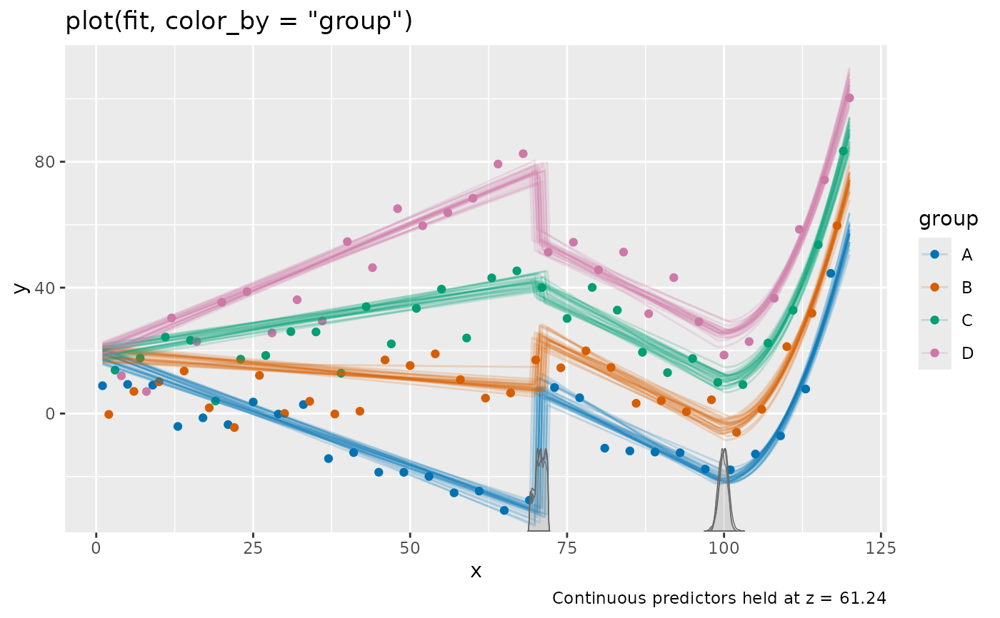
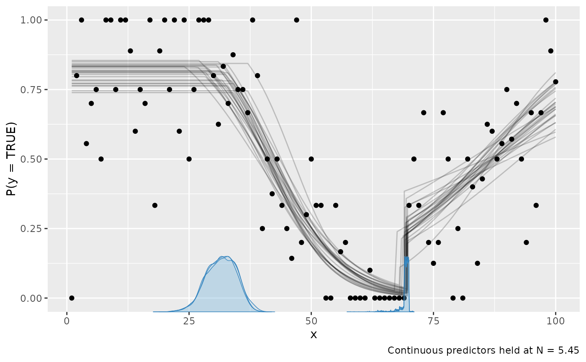

Get example models and data
Arguments
- name
Name of the example. One of:
"demo": Two change points between intercepts and joined/disjoined slopes."ar": One change point in autoregressive residuals."binomial": Binomial with two change points. Much like"demo"on a logit scale."group": Group-level (random) intercepts and factor effects across a change point."intercepts": An intercept-only change point."multiple": Multiple regression with categorical predictors and interactions."quadratic": A change point to a quadratic segment."varying": Varying / hierarchical change points."variance": A change in variance, including a variance slope.
- sample
One of
"post": Sample the posterior."prior": Sample only the prior. Plots, summaries, etc. will use the prior. This is useful for prior predictive checks."both": Sample both prior and posterior. Plots, summaries, etc. will default to using the posterior. The prior only has effect when doing Savage-Dickey density ratios inhypothesis."none"orFALSE: Do not sample. Returns an mcpfit object without sample. This is useful if you only want to check prior strings (fit$prior), the JAGS model (fit$jags_code), etc.
- warn
Logical. Warn about non-convergence (
Rhat > 1.01orESS < 400) after sampling? Defaults toTRUE.- plot
Logical. Plot the fitted example? No plot is produced when
sample = FALSE.
Value
An mcpfit, enriched with a $call field. It contains the code to
reproduce the data and the fit.
Author
Jonas Kristoffer Lindeløv jonas@lindeloev.dk
Examples
# \donttest{
fit = mcp_example("multiple")
#> Compiling model graph
#> Resolving undeclared variables
#> Allocating nodes
#> Graph information:
#> Observed stochastic nodes: 120
#> Unobserved stochastic nodes: 15
#> Total graph size: 4259
#>
#> Initializing model
#>
#> Finished sampling in 4.7 seconds

print(fit$call) # See how the data was simulated
#> # Define model
#> model = list(
#> y ~ 1 + x:group + z,
#> ~ 1 + x + group,
#> ~ 0 + I(x^2)
#> )
#>
#> # Simulate data
#> set.seed(42)
#> data = data.frame(
#> x = 1:120,
#> group = rep(c('A', 'B', 'C', 'D'), 30),
#> z = rnorm(120, mean = 1:120, sd = 25),
#> y = 2. # or whatever signals 'numeric'. Will be replaced by simulation below.
#> )
#> empty = mcp(model, data, sample = FALSE, par_x = 'x')
#> data$y = empty$simulate(empty, data,
#> cp_1 = 70,
#> cp_2 = 100,
#>
#> Intercept_1 = 10,
#> z_1 = 0.2,
#> xgroupA_1 = -0.75,
#> xgroupB_1 = -0.25,
#> xgroupC_1 = 0.25,
#> xgroupD_1 = 0.75,
#>
#> Intercept_2 = 10,
#> x_2 = -1,
#> groupB_2 = 15,
#> groupC_2 = 30,
#> groupD_2 = 45,
#>
#> xE2_3 = 0.2,
#>
#> sigma_1 = 5
#> )
#>
#> # Run sampling
#> fit = mcp(model, data, par_x = 'x', sample = sample, warn = warn, seed = 42)
#>
#> # Illustrative plot
#> if (plot) {
#> set.seed(42)
#> print(plot(fit, color_by = 'group') + ggplot2::labs(title = 'plot(fit, color_by = "group")'))
#> }
# Without sampling
empty = mcp_example("binomial", sample = FALSE, plot = FALSE)
print(empty)
#> Family: binomial(link = 'logit')
#> Segments:
#> 1: y | trials(N) ~ 1
#> 2: y | trials(N) ~ 1 ~ 0 + x
#> 3: y | trials(N) ~ 1 ~ 1 + x
#>
#> No samples. Nothing to summarise.
print(empty$call)
#> # Define model
#> model = list(
#> y | trials(N) ~ 1, # constant rate
#> ~ 0 + x, # joined changing rate
#> ~ 1 + x # disjoined changing rate
#> )
#>
#> # Simulate data
#> set.seed(42)
#> data = data.frame(
#> x = 1:100,
#> N = base::sample(10, 100, replace=TRUE),
#> y = 0. # Numeric placeholder that is valid for every sampled trial count.
#> )
#> empty = mcp(model, data, family = binomial(), sample = FALSE)
#> data$y = empty$simulate(empty, data,
#> cp_1 = 30,
#> cp_2 = 70,
#> Intercept_1 = 1.5,
#> Intercept_3 = -1,
#> x_2 = -0.15,
#> x_3 = 0.05
#> )
#>
#> # Run sampling
#> fit = mcp(model, data, family = binomial(), sample = sample, warn = warn, seed = 42)
#>
#> # Illustrative plot
#> if (plot) {
#> set.seed(42)
#> print(plot(fit, q_fit = TRUE) + ggplot2::labs(title = 'plot(fit, q_fit = TRUE)'))
#> }
# Now sample this model
fit2 = mcp(empty$model, empty$data, family = empty$family)
#> Compiling model graph
#> Resolving undeclared variables
#> Allocating nodes
#> Graph information:
#> Observed stochastic nodes: 100
#> Unobserved stochastic nodes: 6
#> Total graph size: 2229
#>
#> Initializing model
#>
#> Finished sampling in 2.2 seconds
#> Warning: Some parameters may not have converged well:
#> * ess_bulk or ess_tail < 400: cp_2
#> Inspect `summary(fit)` and `plot_pars(fit)`, and consider increasing `iter`/`adapt` or simplifying the model before trusting these results.
plot(fit2)

# }